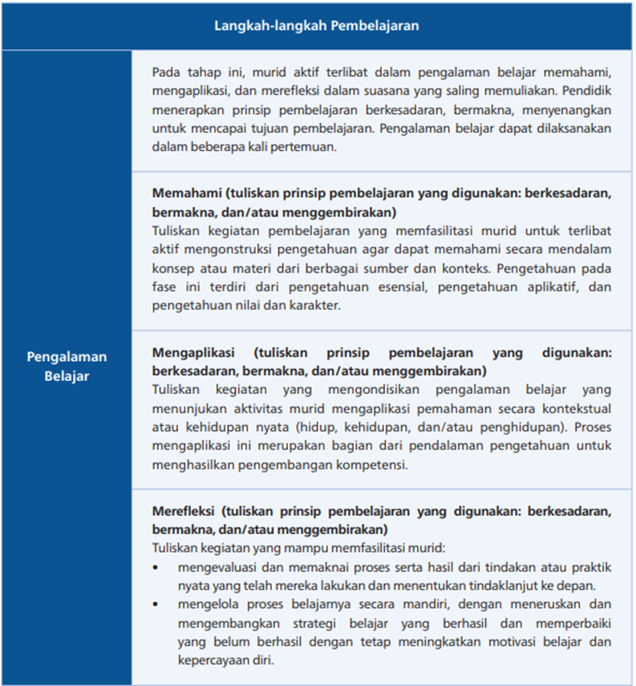

1. Langkah Perencanaan Pembelajaran Numerasi Berbasis Asesmen
Bapak/Ibu peserta, setelah mempelajari berbagai jenis media virtual manipulatif dan memahami cara menyusunnya sesuai dengan Capaian Pembelajaran (CP), saatnya kita mendalami langkah-langkah perencanaan pembelajaran numerasi berbasis asesmen sesuai dengan Panduan Pembelajaran dan Asesmen (PPA) Tahun 2025.
Pembelajaran yang efektif dimulai dari perencanaan yang matang. Guru perlu merancang pembelajaran dan asesmen secara terpadu, mencakup asesmen awal, asesmen selama proses pembelajaran, dan asesmen akhir. Perencanaan asesmen, khususnya pada tahap awal, bertujuan untuk mengidentifikasi kebutuhan belajar murid agar rancangan pembelajaran dapat disesuaikan dengan tahap capaian mereka.
Dokumen perencanaan pembelajaran disusun secara fleksibel, jelas, dan sederhana. Tujuannya adalah untuk memandu guru dalam melaksanakan pembelajaran sehari-hari agar selaras dengan tujuan pembelajaran. Oleh karena itu, perencanaan pembelajaran perlu disusun berdasarkan alur tujuan pembelajaran yang telah ditetapkan. Saat menyusun perencanaan pembelajaran, guru diharapkan memperhatikan langkah-langkah seperti yang ditampilkan pada gambar 3.1.
 Gambar 3. Langkah Pelaksanaan Pembelajaran. (sumber)
Gambar 3. Langkah Pelaksanaan Pembelajaran. (sumber)
Perencanaan pembelajaran numerasi di SDLB perlu dilakukan secara menyeluruh, dimulai dari asesmen awal hingga pemanfaatan teknologi digital. Berikut beberapa langkah utama yang perlu diperhatikan:
Langkah Pertama: Asesmen Diagnostik Awal (Pre-Assessment)
Bagi penyelenggara pendidikan khusus (SDLB dan sekolah inklusif), asesmen awal dilakukan melalui asesmen diagnostik. Hasil asesmen ini kemudian dimasukkan ke dalam perencanaan pembelajaran dalam bentuk profil awal murid.
Identifikasi kebutuhan belajar melalui asesmen diagnostik numerasi merupakan langkah krusial, karena membantu guru memahami tingkat pemahaman murid, kekuatan yang dimiliki, serta area yang membutuhkan intervensi. Sebelum merancang materi, guru perlu mengetahui posisi kompetensi awal murid.
Contoh aktivitas asesmen diagnostik:
- Asesmen informal:
observasi langsung saat murid berinteraksi dengan benda-benda numerik seperti balok, gambar, angka, atau replika uang. - Wawancara terstruktur:
pertanyaan sederhana seperti “Ada berapa balok ini?”, “Angka ini berapa?”, atau “Tunjukkan uang seribu.” - Checklist kemampuan:
mencatat kemampuan murid seperti mengenal angka 1–10, menghitung benda hingga 5, membandingkan jumlah (lebih banyak/lebih sedikit), serta mengenal uang logam atau uang kertas tertentu.
Langkah Kedua: Desain Pembelajaran
Bapak/Ibu, setelah berhasil melakukan identifikasi kebutuhan belajar murid, langkah selanjutnya adalah mendesain pembelajaran. Desain pembelajaran dimulai dengan merumuskan tujuan pembelajaran yang operasional, mencakup kompetensi dan konten yang mendorong pemikiran mendalam. Pendidik memilih strategi seperti pembelajaran berbasis masalah, projek, atau inkuiri untuk menciptakan pengalaman belajar aktif dan relevan dengan kehidupan nyata, yang dapat diperkuat melalui kemitraan antarmata pelajaran hingga melibatkan pihak eksternal. Lingkungan pembelajaran dirancang aman, inklusif, dan merdeka (fisik/virtual) agar murid bebas bereksplorasi, dengan teknologi digital sebagai pendukung opsional untuk meningkatkan interaktivitas.
Perencanaan pembelajaran menerapkan tiga prinsip:
- berkesadaran, yaitu melibatkan murid memahami tujuan dan merefleksikan proses belajar;
- bermakna, adalah mengaitkan materi dengan konteks nyata;
- menggembirakan, yaitu menciptakan suasana positif dan interaktif. Ketiga prinsip ini membangun pembelajaran yang mendalam dan berdampak.
Pembelajaran mendalam dirancang melalui tiga tahap:
- memahami: murid mengonstruksi pengetahuan esensial, aplikatif, dan nilai-karakter secara aktif;
- mengaplikasi: murid menerapkan pengetahuan dalam konteks nyata, menganalisis, dan mengembangkan solusi kreatif;
- merefleksi: menghasilkan produk nyata atau unjuk kerja yang mencerminkan pemahaman dan keterampilan menyeluruh
Berikut contoh kerangka desain pembelajaran dalam PPA Tahun 2025:
 Gambar 4. Contoh kerangka desain pembelajaran dalam PPA Tahun 2025. (sumber)
Gambar 4. Contoh kerangka desain pembelajaran dalam PPA Tahun 2025. (sumber)
Langkah Ketiga: Pengalaman Belajar
Perencanaan pembelajaran perlu memuat pengalaman belajar yang memungkinkan murid untuk mengaplikasikan pengetahuan secara kontekstual dalam kehidupan nyata. Pengetahuan yang telah diperoleh pada tahap pemahaman digunakan sebagai dasar untuk memperluas wawasan dan memperdalam pemikiran.
Proses pembelajaran mendorong murid untuk mengaitkan berbagai gagasan, melakukan analisis, serta mengembangkan solusi yang kreatif dan inovatif dalam menghadapi permasalahan konkret. Hasil dari proses ini dapat diwujudkan dalam bentuk produk nyata atau unjuk kerja yang mencerminkan pemahaman dan keterampilan murid secara menyeluruh.
Guru perlu menyusun langkah-langkah pembelajaran yang selaras dengan prinsip pembelajaran mendalam, yaitu:
- Berkesadaran : murid menyadari tujuan dan manfaat dari setiap aktivitas belajar
- Bermakna : pembelajaran relevan dengan kehidupan dan kebutuhan murid
- Menggembirakan: proses belajar dirancang agar menyenangkan dan memotivasi
Hal-hal yang dilakukan pada tahap ini meliputi:
- Menyusun rencana pembelajaran secara sistematis dan fleksibel
- Menentukan tujuan dan alur pembelajaran berdasarkan Capaian Pembelajaran (CP), serta mengaitkan kegiatan pembelajaran dengan hasil asesmen
- Mengembangkan modul ajar yang memuat langkah-langkah pembelajaran dan aktivitas yang akan dilakukan. Materi yang dipilih sebaiknya konkret dan media yang digunakan menarik untuk memfasilitasi pemahaman numerasi
- Menyesuaikan media pembelajaran dengan karakteristik murid:
- Untuk murid dengan hambatan pendengaran, gunakan media visual seperti kartu angka, poster, gambar, atau video yang menarik
- Untuk murid dengan hambatan intelektual, gunakan media konkret seperti biji-bijian, balok, kancing, atau replika uang mainan
- Untuk murid dengan hambatan pendengaran, gunakan media visual seperti kartu angka, poster, gambar, atau video yang menarik
Berikut contoh kerangka dan penjelasan tentang pengalaman belajar sesuai dengan PPA Tahun 2025:

Gambar 5. Contoh kerangka dan penjelasan tentang pengalaman belajar sesuai dengan PPA Tahun 2025. (sumber)
Langkah Keempat: Merancang Asesmen Formatif Berkelanjutan
Bapak/Ibu peserta, asesmen formatif berkelanjutan dilaksanakan selama proses pembelajaran berlangsung. Tujuannya adalah untuk memantau kemajuan belajar murid secara real-time dan menyesuaikan strategi pengajaran sesuai kebutuhan. Pemahaman murid diperiksa secara terus-menerus, dan umpan balik diberikan secepat mungkin agar pembelajaran tetap relevan dan responsif.
Beberapa aktivitas yang dapat dilakukan pada tahap ini meliputi:
- Observasi terstruktur
Guru mengamati bagaimana murid merespons tugas. Apakah mereka menunjukkan pemahaman atau masih mengalami kebingungan? - Tanya jawab langsung
Pertanyaan sederhana seperti “Berapa uang saku kamu hari ini?” atau “Jam berapa sekarang?” dapat diajukan sambil menunjuk jam analog di kelas untuk menguji pemahaman numerasi secara kontekstual. - Bermain peran (role-playing)
Murid diajak bermain peran sebagai pembeli atau kasir di toko kelas. Aktivitas ini membantu menguji pemahaman mereka tentang nilai mata uang dan proses transaksi sederhana. - Refleksi guru
Respons murid, kesulitan yang muncul, dan strategi yang berhasil perlu dicatat. Data ini menjadi dasar untuk menyesuaikan rencana pembelajaran berikutnya agar lebih tepat sasaran.
Berikut contoh asesmen pembelajaran dalam PPA Tahun 2025:
 Gambar 3. 4. Contoh asesmen pembelajaran dalam PPA Tahun 2025
Gambar 3. 4. Contoh asesmen pembelajaran dalam PPA Tahun 2025
Sumber: https://uploads.belajar.id/document/files/Pembelajaran_dan_Asesmen_2025
Langkah Kelima: Refleksi dan Perbaikan Rencana Pembelajaran
Bapak/Ibu peserta, evaluasi terhadap rencana dan desain pembelajaran perlu dilakukan secara menyeluruh setelah asesmen dilaksanakan. Tujuannya adalah untuk mengidentifikasi kekuatan dan kelemahan dalam perencanaan, serta menyesuaikannya untuk siklus pembelajaran berikutnya.
Beberapa aktivitas yang dapat dilakukan pada tahap ini meliputi:
- Menetapkan tujuan baru yang lebih menantang apabila murid telah berhasil mencapai tujuan pembelajaran sebelumnya.
- Melakukan analisis apabila murid belum mencapai tujuan. Pertimbangkan apakah media yang digunakan kurang tepat, atau apakah tujuan pembelajaran terlalu sulit.
- Menyesuaikan kembali rencana pembelajaran berdasarkan hasil analisis, lalu mengulang siklus perencanaan dari awal dengan strategi yang lebih sesuai.
Langkah ini membantu memastikan bahwa pembelajaran tetap adaptif, responsif, dan relevan dengan kebutuhan serta perkembangan murid SDLB.
2. Penyusunan Modul Ajar Sederhana yang Memuat Media Virtual Manipulatif
Bapak/Ibu, contoh Modul Ajar sederhana untuk murid dengan hambatan pendengaran dapat diakses melalui tautan:
Tautan Contoh Modul Ajar atau pada lampiran nomor 4.
Sedangkan contoh Modul Ajar sederhana untuk murid dengan hambatan intelektual tercantum pada tautan:
Tautan Contoh Modul Ajar atau pada lampiran nomor 5.
Dokumen tersebut dapat digunakan sebagai referensi awal dalam menyusun perencanaan pembelajaran dan lembar kerja peserta didik (LKPD) yang mengintegrasikan media virtual manipulatif secara kontekstual dan adaptif.
3. Contoh Aktivitas Numerasi sesuai Elemen Capaian Pembelajaran (CP)
Aktivitas numerasi bagi murid dengan hambatan pendengaran
Bapak/Ibu, aktivitas numerasi bagi murid dengan hambatan pendengaran perlu dirancang secara cermat. Fokus utamanya adalah menjembatani kesenjangan komunikasi dan memaksimalkan modalitas visual serta kinestetik. Karena penglihatan menjadi modal utama, maka aktivitas pembelajaran sebaiknya:
- menggunakan alat peraga konkret seperti benda nyata, gambar, poster, dan bahasa isyarat
- mengandalkan visualisasi data
- mengintegrasikan bahasa isyarat secara konsisten
Salah satu contoh video pembelajaran numerasi di SDLB menggunakan media timbangandapat disaksikan pada Tautan Video Pembelajaran Numerasi
Berikut contoh aktivitas numerasi yang disesuaikan dengan elemen-elemen CP numerasi:
1. Mengenal Bilangan
Tujuan : Murid memahami konsep dasar bilangan.
Aktivitas : Kartu Angka dan Benda
- Siapkan kartu angka (0–10) dan benda konkret seperti balok, koin, atau mainan kecil.
- Guru menunjukkan satu jari dan mengisyaratkan angka “2”; murid mengambil satu balok dan meletakkannya di samping kartu angka “2”.
- Guru mengulang dengan angka lain menggunakan isyarat tangan; murid menyesuaikan jumlah benda.
- Aktivitas ini menggabungkan media visual, benda konkret, dan bahasa isyarat untuk menghubungkan jumlah dengan simbol angka.
2. Penjumlahan dan Pengurangan
Tujuan : Murid memahami operasi dasar matematika.
Aktivitas : Mangkuk dan Kelereng
- Sediakan dua mangkuk dan beberapa kelereng.
- Untuk penjumlahan: letakkan 2 kelereng di mangkuk pertama dan 3 di mangkuk kedua; guru mengisyaratkan angka dan simbol “+”, lalu menggabungkan kelereng ke satu mangkuk besar.
- Untuk pengurangan: mulai dengan 5 kelereng, lalu guru mengambil 2 dan murid menghitung sisanya.
- Aktivitas ini menekankan proses konkret “menggabungkan” dan “mengambil” yang mudah dipahami secara visual.
3. Pengukuran
Tujuan : Murid memahami konsep panjang, berat, dan waktu.
Aktivitas : Mengukur Keterampilan
- Panjang: Gunakan penggaris pita untuk mengukur benda; guru menunjukkan angka dan mengisyaratkan panjangnya.
- Berat: Gunakan timbangan sederhana; guru membandingkan berat benda dan menunjukkan perbedaan melalui gerakan tubuh.
- Waktu: Gunakan jam analog dan digital; guru mengaitkan waktu dengan rutinitas harian, misalnya “berangkat sekolah” pukul 07.00.
4. Geometri
Tujuan : Murid mengenal bentuk, bangun, dan posisi.
Aktivitas : Mencari Bentuk di Sekitar Kita
- Sediakan kartu atau papan yang menampilkan berbagai bentuk dasar seperti lingkaran, segitiga, dan persegi.
- Guru menunjuk bentuk di papan, lalu mengisyaratkan nama bentuk tersebut.
- Setelah itu, guru dan murid berjalan di sekitar kelas atau sekolah untuk mencari benda-benda yang menyerupai bentuk-bentuk tersebut (misalnya, jam dinding berbentuk lingkaran, jendela berbentuk persegi).
- Aktivitas ini membantu murid mengasosiasikan bentuk abstrak dengan objek nyata di lingkungan mereka.
5. Analisis Data
Tujuan : Murid mampu mengumpulkan dan menyajikan data sederhana.
Aktivitas : Menghitung Warna Favorit
- Sediakan stiker warna-warni dan buat bagan sederhana di papan tulis dengan kolom-kolom untuk warna (merah, kuning, hijau, biru, dll).
- Guru mengisyaratkan "warna kesukaan" lalu menunjuk setiap murid untuk memilih warna favorit mereka. Murid diminta menempelkan stiker di kolom warna yang mereka pilih.
- Setelah semua stiker tertempel, guru dan murid bersama-sama menghitung jumlah stiker di setiap kolom. Guru mengisyaratkan hasil hitungan (misalnya, "merah ada 5").
- Aktivitas ini melatih murid dalam mengumpulkan, menghitung, dan membandingkan data secara visual dan konkret.
Aktivitas numerasi bagi murid dengan hambatan intelektual
Murid dengan hambatan intelektual cenderung mengalami kesulitan dalam memahami konsep abstrak. Oleh karena itu, menghubungkan angka dan operasi hitung dengan benda-benda nyata menjadi hal yang sangat penting. Aktivitas numerasi bagi murid dengan hambatan intelektual perlu dirancang dengan pendekatan yang terstruktur, multisensori, dan berfokus pada fungsi praktis dalam kehidupan sehari-hari.
Setiap aktivitas bertujuan menjadi jembatan antara konsep abstrak dan pengalaman konkret, sekaligus memperkuat stimulasi sensorik. Tujuan akhir dari pembelajaran numerasi adalah mendorong kemandirian fungsional, seperti kemampuan berbelanja di warung, mengelola waktu, atau berinteraksi dengan lingkungan sekitar.
Salah satu contoh aktivitas numerasi bagi murid dengan hambatan intelektual dapat dilihat pada Tautan Video Contoh Aktivitas Numerasi
Contoh lain yang disusun berdasarkan elemen-elemen Capaian Pembelajaran (CP) numerasi, dengan pendekatan konkret, berulang, dan fungsional:
1. Mengenal Bilangan
Tujuan : Murid memahami konsep jumlah dan simbol angka.
Aktivitas : Mencocokkan Angka dan Benda Konkret
- Sediakan kartu angka dengan visual yang jelas (misalnya, angka 1 disertai gambar satu apel).
- Siapkan berbagai benda konkret seperti replika buah, balok, atau pensil.
- Guru menunjukkan kartu angka “3” dan meminta murid untuk mengambil tiga balok.
- Aktivitas diulang dengan angka lain untuk menghubungkan simbol angka dengan jumlah benda.
- Pengulangan aktivitas ini membantu pengenalan dan pemahaman angka secara bertahap dan terstruktur.
2. Penjumlahan dan Pengurangan
Tujuan : Murid memahami konsep penambahan (menyatukan) dan pengurangan (mengambil).
Aktivitas : Bermain dengan Koin dan Celengan
- Penjumlahan: Guru menyediakan dua kelompok koin (misalnya, dua koin di satu tangan dan satu koin di tangan lain). Murid diminta menyatukan semua koin ke dalam celengan. Guru kemudian meminta murid menghitung total koin yang ada di celengan. Aktivitas ini secara konkret menunjukkan bahwa penjumlahan adalah proses menyatukan.
- Pengurangan: Guru meminta murid mengambil lima koin dari celengan. Setelah itu, murid diminta mengambil dua koin lagi dari celengan dan menghitung sisa koin di dalamnya.
- Aktivitas ini memperkuat pemahaman murid tentang proses "menambah” dan “mengambil sebagian dari total".
3. Pengukuran
Tujuan : Murid memahami konsep dasar panjang, berat, dan waktu.
Aktivitas : Mengukur dan Membandingkan Benda
- Panjang
Sediakan penggaris dan benda-benda sederhana seperti buku, pensil, atau kotak pensil. Murid diminta mengukur panjang setiap benda dan membandingkannya (misalnya, "Buku lebih panjang dari pensil"). Gunakan kata-kata sederhana seperti “lebih panjang” dan “lebih pendek” yang bisa disertai dengan gerakan tangan. - Berat
Gunakan timbangan sederhana. Letakkan satu buah apel di satu sisi timbangan dan satu buah pisang di sisi lain. Ajak murid mengamati mana yang lebih berat. Guru dapat mengatakan, "Apel ini lebih berat" sambil menunjuk sisi timbangan yang turun. - Waktu
Gunakan jam analog besar. Hubungkan waktu dengan rutinitas harian yang familiar (misalnya, pukul 05.00 adalah waktu untuk "bangun tidur"). Putar jarum jam ke waktu yang sesuai dan ajak murid untuk melakukan aktivitas tersebut.
4. Geometri
Tujuan : Murid mengenal bentuk dasar dan posisi.
Aktivitas : Mencari Bentuk di Lingkungan
- Sediakan gambar bentuk-bentuk dasar seperti lingkaran, persegi, dan segitiga.
- Ajak murid berjalan di sekitar kelas atau sekolah untuk mencari benda-benda yang menyerupai bentuk tersebut. Carilah benda yang bentuknya seperti lingkaran, persegi panjang, persegi. Contoh: jam dinding adalah lingkaran, papan tulis adalah persegi panjang, meja adalah persegi.
- Aktivitas ini memperkuat hubungan antara bentuk abstrak dan objek nyata.
5. Analisis Data
Tujuan : Murid mampu mengelompokkan dan menghitung data sederhana.
Aktivitas : Mengumpulkan Benda Sesuai Warna
- Sediakan beberapa kardus dengan label warna (merah, biru, hijau).
- Siapkan tumpukan balok kecil atau mainan dengan warna yang berbeda-beda.
- Murid diminta memilah dan memasukkan balok-balok kecil ke dalam kardus yang sesuai warnanya.
- Setelah semua balok dimasukkan, murid diminta menghitung jumlah balok di setiap kotak.
- Aktivitas ini mengajarkan konsep klasifikasi dan penghitungan data dasar secara visual dan taktual.
4. Strategi Asesmen Formatif Saat Penggunaan Media
Bapak/Ibu peserta, asesmen formatif yang efektif saat menggunakan media pembelajaran—terutama di lingkungan pendidikan khusus—perlu difokuskan pada pengamatan langsung, pemberian umpan balik yang cepat, dan pengumpulan data yang terstruktur. Tujuannya adalah untuk memantau pemahaman murid secara berkelanjutan dan menyesuaikan pengajaran secara real-time.
Berikut beberapa strategi yang dapat diterapkan saat melakukan asesmen formatif bagi murid dengan hambatan tertentu:
a. Pengamatan langsung dan observasi visual
Strategi ini mengandalkan pengamatan guru terhadap aktivitas murid, bukan hanya pada respons verbal. Karena media yang digunakan umumnya berbasis visual (seperti video, gambar, balok), guru dapat mencermati interaksi murid secara langsung.
Catatan observasi dapat mencakup:
- Respons murid terhadap instruksi visual
- Gestur dan ekspresi nonverbal seperti kebingungan, antusiasme, atau keraguan
- Kemampuan murid dalam mencocokkan gambar, mengambil jumlah benda sesuai instruksi, atau menyelesaikan tugas di aplikasi
b. Umpan balik langsung dan jelas
Umpan balik yang diberikan kepada murid sebaiknya bersifat instan dan mudah dipahami. Hal ini membantu murid mengenali keberhasilan atau kesalahan mereka secara cepat.
Contoh bentuk umpan balik:
- Acungan jempol untuk respons yang tepat
- Telapak tangan terbuka sebagai sinyal untuk mencoba kembali
- Isyarat visual atau simbol sederhana yang konsisten digunakan selama pembelajaran
c. Portofolio dan bukti unjuk kerja/dokumentasi visual
Pengumpulan bukti pembelajaran membantu guru melihat perkembangan murid yang mungkin tidak tampak secara langsung dalam sesi kelas.
Bentuk dokumentasi dapat berupa:
- Produk fisik seperti gambar cetak, karya tangan, atau lembar kerja yang telah diisi
- Foto atau rekaman aktivitas murid saat menggunakan media
- Catatan reflektif guru tentang proses dan hasil belajar murid
Portofolio ini menjadi alat penting untuk menilai kemajuan murid dari waktu ke waktu, serta mengidentifikasi keterampilan yang telah dikuasai maupun yang masih perlu diperkuat.
5. Penguatan Praktik Pembelajaran melalui Refleksi dan Rencana Tindak Lanjut.
Refleksi dan rencana tindak lanjut merupakan dua proses yang saling berkaitan dan menjadi bagian integral dari siklus pembelajaran. Keduanya berfungsi sebagai praktik rutin yang membantu guru meningkatkan kualitas pengajaran secara berkelanjutan, sekaligus menyesuaikan metode pembelajaran berdasarkan pemahaman yang mendalam terhadap situasi dan kebutuhan murid.
1. Pentingnya Refleksi dalam Siklus Pembelajaran
Refleksi menurut para ahli pembelajaran adalah proses analisis mendalam terhadap pengalaman yang telah dilalui, terutama setelah melaksanakan kegiatan pembelajaran. Dalam konteks PPA Tahun 2025, refleksi tidak hanya berfungsi sebagai evaluasi, tetapi juga sebagai sarana untuk menumbuhkan kesadaran diri, kemandirian, dan perbaikan berkelanjutan.
PPA Tahun 2025 mengidentifikasi empat bentuk refleksi yang saling melengkapi:
a. Refleksi Diri
Refleksi diri merupakan komponen esensial dalam siklus pembelajaran. Tujuannya bukan sekadar menilai hasil akhir, tetapi untuk membantu guru dan murid memahami kekuatan, kelemahan, serta area yang perlu diperbaiki.
Bagi guru, refleksi diri mencakup empat ranah kompetensi:
- Pedagogik : efektivitas metode, media, dan strategi pembelajaran
- Kepribadian : sikap dan nilai yang ditunjukkan dalam proses belajar
- Sosial : interaksi dan komunikasi dengan murid serta rekan sejawat
- Profesional : pengembangan diri dan komitmen terhadap profesi
Refleksi diri membantu guru untuk menilai kesesuaian pendekatan dengan karakteristik murid, mengidentifikasi tantangan yang muncul di kelas, serta menyusun rencana perbaikan yang konkret dan terukur.
b. Refleksi Sesama Guru
Refleksi antar guru merupakan bagian dari praktik perbaikan pembelajaran yang berkelanjutan. Proses ini mendorong terciptanya lingkungan belajar yang suportif dan profesional.
Tujuan refleksi sesama guru, antara lain untuk:
- berbagi pengalaman dan strategi pengajaran yang efektif
- membangun komunitas belajar yang saling mendukung
- berkolaborasi dalam perencanaan pembelajaran dan asesmen
- mendorong budaya saling menghargai dan pemberian umpan balik yang konstruktif
c. Refleksi oleh Kepala Satuan Pendidikan
Kepala sekolah dan pengawas/penilik memiliki peran strategis dalam memfasilitasi proses refleksi guru.
Kepala Sekolah:
- Mengadakan diskusi reflektif untuk mendukung pembelajaran
- Memberikan pertanyaan pemantik untuk peningkatan kualitas
- Melakukan observasi kelas secara acak sebagai bagian dari pendampingan
Pengawas/Penilik:
- Mendampingi guru dalam refleksi dialogis yang bersifat non-judgmental
- Mendorong guru untuk berpikir terbuka tanpa tekanan administratif
- Tidak meminta laporan tertulis sebagai syarat refleksi
d. Refleksi oleh Murid
Refleksi oleh murid merupakan komponen penting yang mendorong mereka menjadi pembelajar mandiri sepanjang hayat. Proses ini membantu murid menyadari peran aktif mereka dalam pembelajaran dan mendorong keterlibatan yang lebih bermakna.
PPA Tahun 2025 menekankan bahwa refleksi murid bukan sekadar tugas tambahan, melainkan bagian penting dari pembelajaran yang memberdayakan.
2. Menyusun Rencana Tindak Lanjut
Setelah proses refleksi dilakukan dan masukan diperoleh dari berbagai pihak (guru, rekan sejawat, kepala sekolah, pengawas, dan murid), guru menyusun rencana perbaikan pembelajaran. Rencana ini dapat mencakup:
- Penyesuaian strategi pembelajaran
- Perbaikan media atau metode yang digunakan
- Penguatan dukungan belajar bagi murid yang mengalami hambatan
- Pengembangan asesmen yang lebih responsif dan bermakna
- Kolaborasi lanjutan dengan rekan sejawat atau kepala sekolah untuk merancang solusi bersama
Melalui proses refleksi dan tindak lanjut yang berkelanjutan, guru akan terus meningkatkan kualitas pengajaran yang pada akhirnya bermuara pada peningkatan mutu pembelajaran murid.